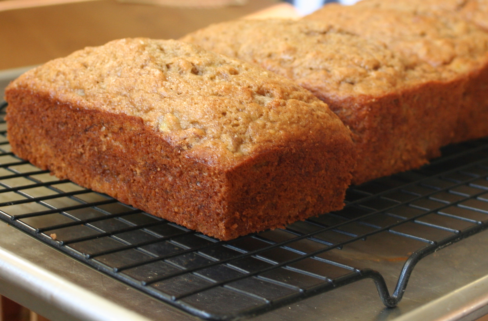

How To Make Banana Bread!
Welcome To my Page! This how to site will help you make Banana Bread!
Banana bread is so fun to bake. I am so happy to show you the way to make banana bread.The experience of baking has been life changing for me. I hope you enjoy!
